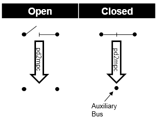
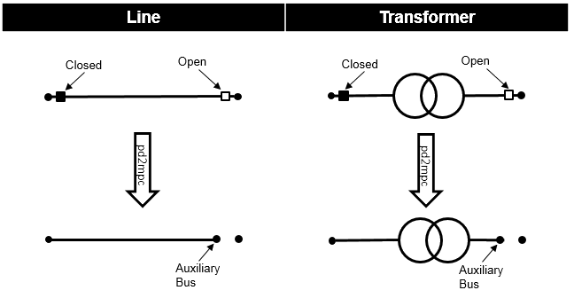

Switch¶
Create Function¶
Input Parameters¶
net.switch
Parameter |
Datatype |
Value Range |
Explanation |
bus* |
integer |
index of connected bus |
|
name |
string |
name of the switch |
|
element* |
integer |
index of the element the switch is connected to:
- bus index if et = «b»
- line index if et = «l»
- trafo index if et = «t»
|
|
et* |
string |
«b» - bus-bus switch
«l» - bus-line switch
«t» - bus-trafo
«t3» - bus-trafo3w switch
|
element type the switch connects to |
type |
string |
naming conventions:
«CB» - circuit breaker
«LS» - load switch
«LBS» - load break switch
«DS» - disconnecting switch
|
type of switch |
closed* |
boolean |
True / False |
signals the switching state of the switch |
*necessary for executing a power flow calculation.
Electric Model¶
Bus-Bus-Switches:
Two buses that are connected with a closed bus-bus switches are fused internally for the power flow, open bus-bus switches are ignored:
{kind=link}
This has the following advantages compared to modelling the switch as a small impedance:
there is no voltage drop over the switch (ideal switch)
no convergence problems due to small impedances / large admittances
less buses in the admittance matrix
Bus-Element-Switches:
When the power flow is calculated internally for every open bus-element switch an auxilary bus is created in the pypower case file. The pypower branch that corresponds to the element is then connected to this bus. This has the following advantages compared to modelling the switch by setting the element out of service:
loading current is considered
information about switch position is preserved
difference between open switch and out of service line (e.g. faulty line) can be modelled
Closed bus-element switches are ignored:
{kind=link}